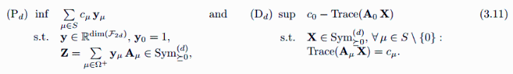
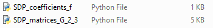

Minimizing a trigonometric polynomial with crystallogrpahic symmetry
We consider the problem of minimizing the objective function f below.
(As a classical polynomial we minimize on the T-orbit space, as a Laurent polynomial we minimize on the compact torus.)
| > | Type,n := 'G',2; #type, dimension
f:=TPoly(Type,[2,0])+2*TPoly(Type,[0,1]); #objective function as a classical polynomial |
| (1.1) |
The Chebyshev moment relaxation/SOS reinforcement is a primal/dual semidefinite program, whose theoretical solution is a lower bound for the minimum of f.
It is given by

We then show how to solve this SDP with python, Mosek below.
Step 1: Choose the hierarchy order "d"
Step 2: SDP matrices "A"
Step 3: List of coefficients "c"
If you followed steps 1-3, you should have two files, "SDP_matrices_G_2_3.py" and "SDP_coefficients_f.py".

To solve the SDP with, for example, python and Mosek (https://docs.mosek.com/latest/pythonapi/index.html), one can use the following code:
(Make sure that the packages cvxpy, numpy, math and the solver MOSEK are installed).
import os; os.chdir('/Users/metzlaff/Documents/Maple/GeneralizedChebyshev Package') #go to the correct directory
import cvxpy as cp
import numpy as np
import math
from SDP_matrices_G_2_3 import A0,A
n,m=len(A0),len(A)
A0 = np.array(A0)
A = [np.array(A[i]) for i in range(m)]
from SDP_coefficients_f import C0,C
X = cp.Variable((n, n), PSD=True)
objectiveP = C0-cp.trace(A0@X)
constraintsP = [cp.trace(A[i]@X) == C[i] for i in range(m)]
probP = cp.Problem(cp.Maximize(objectiveP), constraintsP)
vP=probP.solve(solver='MOSEK')